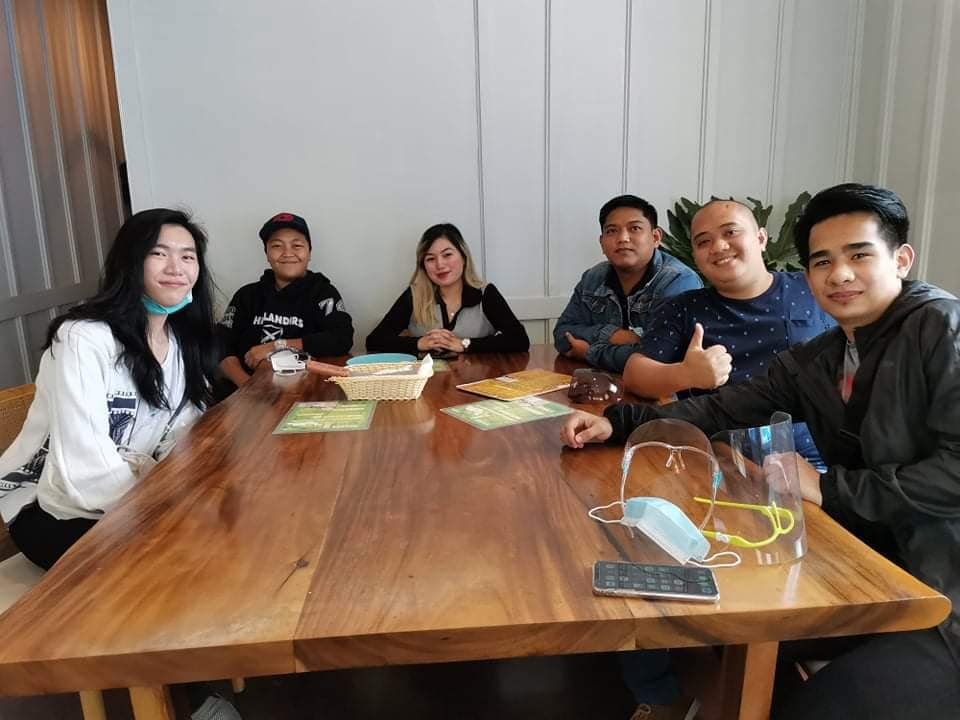
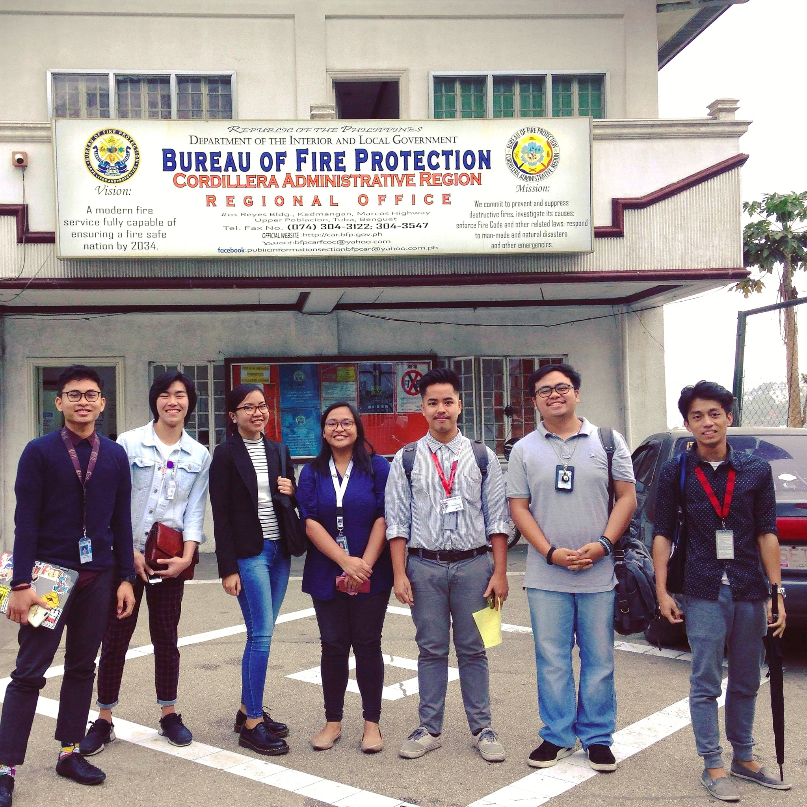
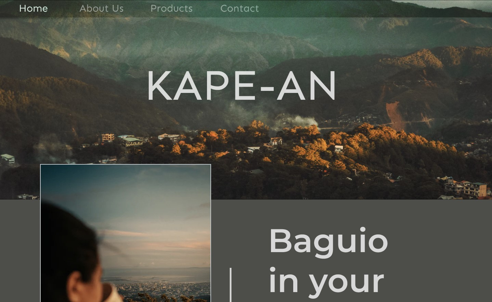
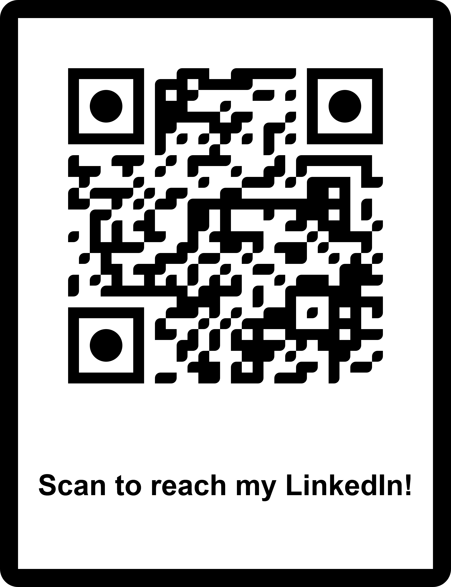

My Software Career Journey (so far).
Hello! I'm Chad Laban, a passionate Software Developer with a love for crafting subtle but impactful user experiences.
In my recent role at Capella BPO, I worked on the development of front-end code for
several web applications using the Vue.js framework and Bootstrap, alongside PostgreSQL and Node.js.
My responsibilities included technology research, building test APIs, and coding front-end solutions.
Vue.js was our primary choice due to its interactivity and component-based architecture.
In my current position, I serve as a developer responsible for crafting both
client and admin interfaces for the Okinawa government in Japan, as part of the Okimeguri
project (https://okimeguri.com/). This entails frontend and backend development tasks, where
we utilized technologies such as Vue.js with Nuxt.js, Typescript, and Pinia State Management
for the client side, and Express.js with Sequelize (ORM) for the backend. Within this project,
I've honed my skills in code implementation and debugging while fostering efficient collaboration
with fellow developers. Additionally, I've applied SEO best practices to optimize the
client side for improved visibility and accessibility.
Prior to this, I contributed my expertise to Giant International Software Station Inc.
as a Software Developer for 1 year and 6 months. In this role, I handled feature requests and
dashboard customizations while maintaining quality standards. My skill set is diverse, encompassing
JavaScript, CSS, HTML, Mocha (Chai), Snowflake, RESTful APIs, ERP Software, Object-Oriented Programming (OOP),
Agile Software Development, analytical skills, usability testing, problem-solving, UI/UX design,
front-end development, and more.
I cherish the time I spent with the Professional/Technical Services Team and Giant International
Software Station. The camaraderie and support from my colleagues were invaluable, making every day an
opportunity for growth and collaboration.
Before my Software Developer role, I served as a Software Analyst for 1 year and 2 months, also
at Giant International Software Station. This experience enhanced my vocal confidence through customer
support and reignited my passion for software development.
I am a person who loves learning more from people and I'm someone who always strive to have quality outputs for work. I also appreciate
working with teams and learning from them. Outside work, I'm someone who loves playing FPS and single player games. I also love cooking meals
for myself and I also jog occasionally, and trying to start a new hobby of reading books. I look forward to connecting with fellow professionals, sharing insights, and exploring opportunities to collaborate and learn. Feel free to reach out—I'm always up for a good tech discussion or a new project venture. Let's connect!
Experiences

Junior FullStack Software Engineer
I am currently working and gaining experience along with Vue.js (Composition API), CSS and Tailwind CSS, Typescript, Express.js, and Sequelize.
Key Responsibilities:
Follow UI/UX designs from AdobeXD, and implement through quality code.
Building quality, reuseable, and efficient components.
Applying SEO principles to web application.
Creating documentations for specific features (technical and non-technical).
Work on backend functionalities and implement RESTful API's.
Debug, maintain, and optimize web applications.
Collaborating and brainstorming with fellow developers.

Software Developer
I have work experience along with HTML, CSS, JavaScript, C#, and SnowFlake; worked on internal/client customizations and trainings for non-technical employees.
Key Responsibilities:
Collaborate with Project Managers with regards to client requirments.
Producing UI/UX prototypes for internal or client dashboards.
Building efficient, reuseable, and clean code.
Generating unit tests for dashboard before releasing.
Assisting non-technical colleagues with regards to internal technical platforms.
Creating documentations for dashboards for technical and non-technical view.
Collaborating, brainstorming, and giving a helping hand to fellow developers.
Software Analyst
Started my career as a Software Analyst. Worked as a technical support, documenting, and assisting clients regarding software products.
Key Responsibilities:
Collaborating and brainstorming with Team Leads with regards to complex client issues.
Taking inbound calls from clients and assisting them with regards to the software platform we offer.
Assist clients with their issue/concern with the software product.
Document issues and troubleshoot them as fast and efficient as possible.
Collaborating with diverse teams with regards to cross-functional issues.

AI Search Box
This is a project that I have collaborated with a UI/UX designer, a quick summary of this project is that this allows a user to quickly search of an AI tool that based on their needs. Github: AI Search Box repository.
Tech Stack:
-
Front-end Technologies/s:
HTML 5, CSS 3, and JavaScript
Front-end Framework: Vue JS
Front-end Styling: Bootstrap 4 and SASS
-
Back-end Technologies/s:
Programming Language: Node.js
Web Framework: Express.js
APIs: RESTful API
-
Database: PostgreSQL (RDMS)
-
Version Control: Git
-
Collaboration Tool: BaseCamp

KAPE-AN
I created a simple landing page using Figma for a concept coffee shop that's based on Baguio City, PH. Initially created a Figma view: Kape-an landing page.
And finally ended up with this: KAPE-AN landing page.
Tech Stack:
-
Front-end Technologies/s:
HTML 5, CSS 3, and JavaScript
Front-end Framework: React JS
Front-end Styling: TailWind CSS
-
Version Control: Git
Recruitment System
Worked on front-end development (HTML, CSS, JavaScript, and BootStrap) for our thesis project for the Bureau of Fire Protection Cordillera (BFP).
Key Responsibilities:
Producing UI/UX for the recruitment website.
Converting UI/UX prototype to actual front-end code using BootStrap4 plus additional customized HTML, CSS, and JavaScript code.
Testing recruitment forms if data and information is being passed correctly to the Database (phpMyAdmin).
Producing technical and non-technical documentation for the website.
Content Management - Wordpress
Worked on content management and data validation for a restaurant website during my Internship.
Key Responsibilities:
Validate data and information to be added on the WordPress website.
Making adjustments to website based from client feedback.
Making sure WordPress components are running smoothly.
Adding customized JavaScript if needed.
Get In Touch
Thank you for checking my portfolio! I hope you found something that's interesting about me. Please feel free to contact me if you have any inquiries.

-
Address
Baguio City 2600, Philippines
-
Phone
(+63)916-3438-407
-
Email
laban.chad@gmail.com

{kind=link}
{kind=link}
{kind=link}
{kind=link}
{kind=link}
{kind=link}